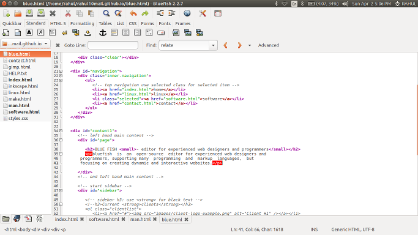

bluefish is an open-source editor for experienced web designers and programmers, supporting many programming and markup languages, but focusing on creating dynamic and interactive websites.
Blue Fish is available for Unix/Linux, Windows, OS X and all other major operating systems.
Below is an image of Blue Fish interface in ubuntu 16.04.
Interface of Blue Fish.